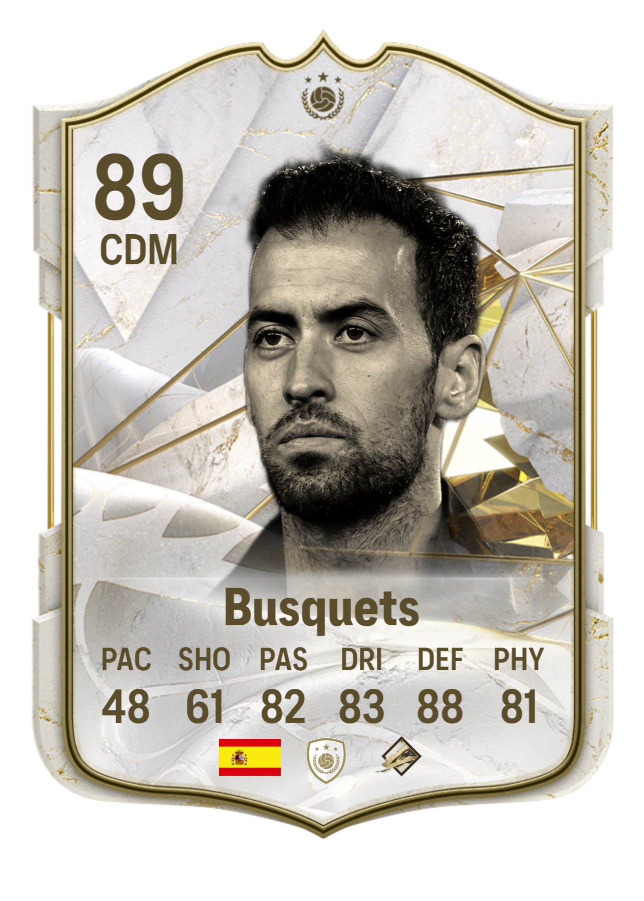

-
Es una carta leyenda que se hizo muy reciente en FIFA Ultimate Team por su trayectoria en el FC Barcelona y en el Inter de Miami
Jugador
Sergio Busquets
Posición
CDM (Mediocentro Defensivo)
Nacionalidad
Española
Características de la carta
Ritmo (PAC 48)
Tiro (SHO 61)
Pase (PAS 82)
Regate (DRI 83)
Defensa (DEF 88)
Físico (PHY 81)